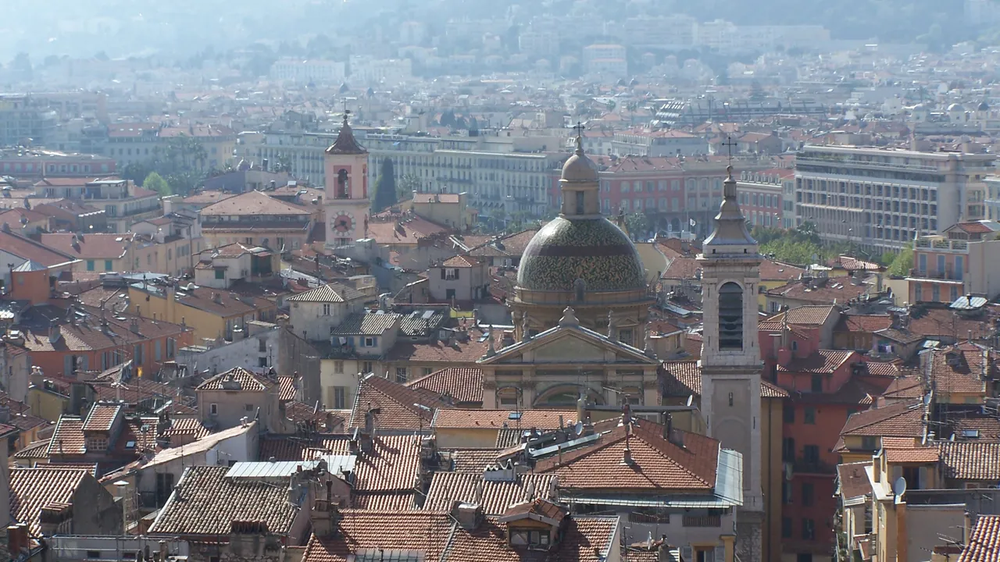
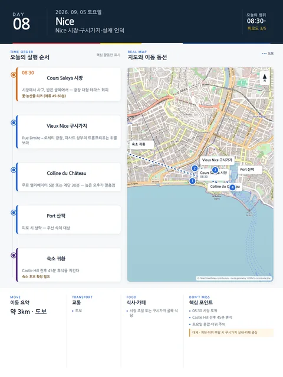

Day 8 · 9/5 토 · Nice

오늘의 주요 장소


- 핵심 실행
- Cours Saleya·Vieux Nice·Castle Hill
- 권장 출발
- 08:30 시장 도착
- 완충
- Castle Hill 전후 45분 휴식
- 예약
- 이 날짜로 잡힌 예약 없음 · 현황
시간표
| 시간 | 일정 | 실행 포인트 |
|---|---|---|
| 07:20–08:05 | Jason 선택 러닝 | Promenade 5km 내외 |
| 09:20–10:20 | Cours Saleya | 과일·올리브·치즈·꽃시장 |
| 10:20–11:30 | Vieux Nice | Nice Old Town–Castle Hill Walk 시작 |
| 11:35–12:35 | Colline du Château | 해변·구시가지·항구 조망 |
| 12:45–13:30 | 가벼운 점심 | socca·salade niçoise·pan bagnat 중 1개 |
| 13:30–16:00 | Promenade 또는 Port·카페 | 폭염이면 숙소휴식 |
| 16:30–18:00 | 선택 | Port 또는 Garibaldi 중 1개 |
| 19:30–21:00 | 전통 Nice 저녁 | La Table Alziari (니스 관광청 2026 리스팅 주 7일 영업 표기 (시간 미표기) (2차 출처)) 또는 Chez Pipo (화–일 11:30–14:30 · 17:30–22:00) — Acchiardo 는 토·일 라 토요일 불가 |
피로도
3/5
이 날의 장소
Colline du Château (성채 언덕) MustCours Saleya MustNice Old Town–Castle Hill Walk MustVieux Nice — 구시가지 Must
일자별 시간표와 본문 표기에서 찾은 것이다. 하루의 전부가 아니라 장소 카드가 있는 것만 담는다.
이 날의 메모
Nice 핵심: 시장, 구시가지, 성채언덕, 해변
- 오늘의 결론: 니스의 시장, 구시가지 골목, 성채 언덕의 지형을 하나의 완성된 도보 흐름으로 연결하여 파악한다.
- 상태: 고정 | 날씨 의존성: 유
- 첫 행동·첫 예약: 09:20 Cours Saleya 시장 투어 | 마지막 귀가: 21:00 저녁식사 후 귀가
핵심 행동 (최대 3개)
- Cours Saleya 식품시장: 아침의 시장을 통과하며 현지 식재료와 소카 간식 즐기기.
- Vieux Nice 도보 산책: 바로크 양식의 성당들과 파스텔톤 이탈리아풍 골목 탐방.
- Colline du Château (성채 언덕): 엘리베이터로 올라 니스 전체 지형과 지중해 해안선 조망하기.
실행 시간표
오늘 지도
식사 및 카페
- 점심: Cours Saleya 시장 및 Vieux Nice 캐주얼 식사 (소카, 팡 바냐 등) - 예산 €10–20/인
- 저녁: La Table Alziari 또는 Chez Pipo (니스 전통요리 및 제철 생선). Acchiardo 는 토·일 휴무
삭제 및 단축 순서 (늦었거나 피곤할 때)
- [1순위 삭제]: 16:30 Port 또는 Garibaldi 추가 산책 (숙소 복귀 및 휴식으로 대체)
- [2순위 삭제]: 오후 카페 체류 및 두 번째 산책 (식사 예약 전 숙소 완전휴식)
대안 대책 (우천·휴관·교통 장애)
- 우천 시: Castle Hill 등정 생략, Palais Lascaris 또는 Matisse/Chagall 미술관 실내 관람으로 전환.
상세 실행 확인
- 최고 리스크
- 계단·더위·토요일 혼잡
- 우선 삭제
- Port·해변
- 대체안
- 구시가지 실내·카페
- 식사·휴식
- 시장 또는 구시가지
- 잠금 필요
- 시장·숙소
Google 실행지도
Cours Saleya 시장과 Castle Hill 조망
지도 펼치기
지도는 펼칠 때만 불러옵니다.
Daily Action Map

실제 좌표와 OpenStreetMap을 사용한 실행용 요약입니다. 도로·대중교통 상황은 출발 직전에 다시 확인하세요.